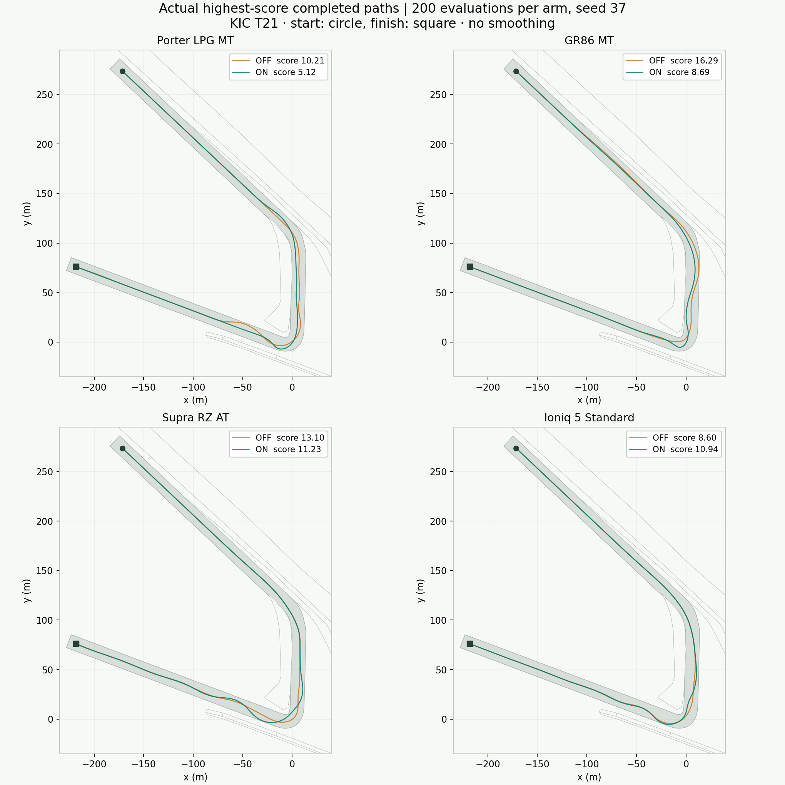

EVOLVING DRIFT · 초기 구현 비교 · 2026-10-30 · 영암 KIC T21
전체 라인을 먼저 찾고,
세부 조작을 다듬는 진화
모든 16개 차량 사양을 확인하고, 네 사양에는 같은 200회 예산으로 전체 라인 탐색을 켜고 끈 비교를 수행했습니다. 수동 네 사양에는 독립적인 클러치 열기·재결합 유전자를 적용했습니다.
이 예산에서는 코너와 직선을 모두 연결한 주행을 찾지 못했습니다. 연결 성공이나 수렴 속도 개선은 아직 입증되지 않았습니다.
2,240실제로 평가한 후보
1428유효 완주 후보
0코너·직선 전체 연결
0시작 시 그립 탐색 횟수
동일 예산 비교
OFF → ON 순서입니다. 전체 라인 탐색의 부모 보관과 변이 일정만 변경했습니다. 클러치 모델·변이, 실패 재시도 정책, 채점·물리·준비된 시작 유전자는 양쪽에 동일하게 적용했습니다. 아래 점수는 각 실행의 최고 유효 완주 기록입니다.
점수 변화: 현대 포터 II · 2.5 LPG 터보 RWD · 슈퍼캡 6MT: -5.09 · 토요타 GR86 ZN8 · 2022 일본 RZ 2.4 RWD · 6MT · 18인치: -7.60 · 토요타 GR 수프라 A90 · GR Supra 3.0T 8AT · 19인치: -1.87 · 현대 아이오닉 5 · Standard RWD · 63 kWh · 19인치: +2.34. 점수 변화만으로 라인이 더 자연스럽거나 전체 연결이 개선되었다고 판정하지 않습니다.
실제 주행 궤적 진단
차체가 바라보는 방향과 이동 방향을 구분합니다. 앞의 세 열은 최고 점수 대표 주행의 측정값이며, 뒤의 진행률은 해당 실행에서 유효하게 완주한 후보 중 최댓값입니다. 두 종류의 최대값은 같은 후보에서 나오지 않을 수 있습니다. 진행률 100%만으로는 속도·apex·연결 유지 조건을 모두 충족한 코너 완료를 뜻하지 않습니다.
* 앞바퀴 여유는 축소 샘플의 최솟값입니다. 전체 물리 프레임의 최솟값이나 안전 보증이 아닙니다. 이탈·충돌 판정은 기존 물리 검사로 결정합니다. 속도 방향 지표는 8m/s 이상 전진하며 스핀하지 않는 샘플만 사용합니다. 해당 샘플이 없으면 — 로 표시합니다.

회색은 시뮬레이터가 사용하는 주행 노면, 주황은 OFF, 청록은 ON입니다. 원본 재생 프레임의 차량 중심 위치를 그대로 그렸으며 보간·미화하지 않았습니다. 방향·슬립각이나 성공 여부를 이 그림만으로 판단할 수 없습니다.
모든 차량 사양 확인
각 40회는 입력·물리·탐색 경로가 실행되는지 확인하는 짧은 검사입니다. 장기 수렴 검증은 아닙니다. 킥 실행 후보 수는 수동 사양에만 나타나며, 킥 때문에 점수가 올랐다는 뜻은 아닙니다.
클러치 킥의 물리 반응
별도 0.7초 직선 실험에서 18m/s, 전개 가속, 같은 기어로 클러치를 계속 연결한 경우와 0.25초 열었다 재결합한 경우를 비교했습니다. 네 수동 사양 모두 킥 직후 후륜 슬립이 더 컸습니다. 엔진 출력 상한은 순정 제약을 유지하며 회전체에 저장된 에너지가 재결합 시 전달됩니다.
이 실험은 킥의 물리 반응을 확인합니다. 코너 연결 성공은 검증하지 않습니다. 회전 관성과 클러치 용량은 모델 추정치이며 동적 롤·열·마모는 포함하지 않았습니다.
검증 범위와 재현
- 단일 코스·시드 37의 제한된 예산입니다. 차량별 일반 성능이나 통계적 우위를 추론하지 않습니다.
- 2240회는 실제 실행 횟수입니다. 고유 차량·유전자 조합은 2076개이며, 16개 사양 검사 중 네 사양의 첫 40회는 ON 200회 실행에서 동일하게 재실행되었습니다. 이 160회의 내용 일치를 확인했습니다.
- 이전 v2 장기 실험과는 수동 물리·초기 유전자·유전자 형식이 달라 점수를 직접 비교하지 않습니다. 과거 재현 검사는 보관된 v2 실행기로 분리했습니다.
- 수동 4사양과 비수동 12사양의 입력 분기, 정지 중 이벤트 종료, 재생 직렬화와 부분 재평가 일치를 확인했습니다. 모바일 실제 변이 후보의 킥 표시도 별도로 확인했습니다.
측정 결과와 소스 식별자 JSON 다운로드 · 설명과 자료로 돌아가기
재현 명령과 식별 기준
node evolving_drift/tools/run-line-clutch-study.cjs --run --scope all --parallel 2 --workers 2 --prefix reproduction-line-clutch
사전 준비된 그립 기록을 먼저 오프라인 생성해야 합니다. 실행기에서는 시작값을 탐색하지 않습니다. JSON에는 실행 설정, 물리·채점·유전자 서명, 각 시작값 식별자, 원본 결과 해시와 소스 SHA-256을 기록했습니다. raw SHA-256은 실험 체크아웃의 실제 바이트, lfSha256은 CRLF를 LF로 정규화한 텍스트 기준입니다.